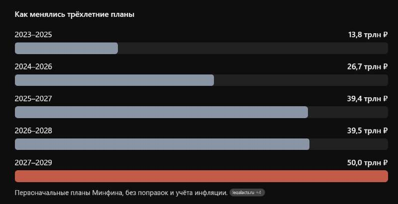
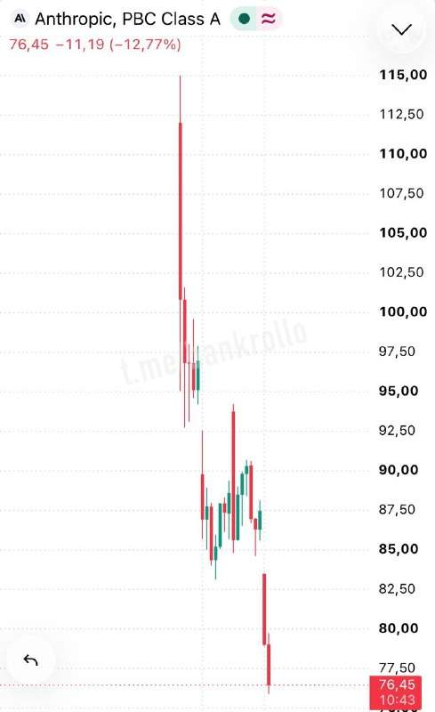

Футболисты-карлики устроили бойню на чемпионате мира по мини-футболу среди карликов. Марокканцев разозлило, что колумбийцы слишком громко праздновали ничью. @bankrollo
Футболисты-карлики устроили бойню на чемпионате мира по мини-футболу среди карликов. Марокканцев разозлило, что колумбийцы слишком громко праздновали ничью. @bankrollo
На Android-устройствах в России и Белоруссии нашли вредоносное ПО RatHat с ИИ. Троян атакует пользователей финансовых сервисов через фишинговые сайты. За несколько секунд программа получает доступ к экрану, микрофону и камере устройства. При вводе данных банковской карты троян способен изменять свое название и иконку на главном экране либо скрываться с него. Вредоносное ПО усилено ИИ Google Gemini 2.5 Flash-Lite через API для совершения атак в любых странах. @bankrollo

Россия потратит на армию и вооружение рекордные 50 трлн рублей за ближайшие три года. Это на 10 трлн больше, чем предусматривал прошлогодний трёхлетний проект бюджета, и почти в четыре раза больше, чем закладывали на 2023–2025 годы. В 2027 году Россия потратит на армию и силовиков вдвое больше, чем на социальную политику, медицину и образование вместе взятые. @bankrollo
ЛСР уйдёт с биржи и выкупит акции по 710,2 рубля за бумагу — документ совета директоров. Голосование пройдёт 28 декабря 2026 года. Сейчас одна акция ЛСР стоит 750 рублей. @bankrollo
Цены на бензин в России стабилизировались — Путин на совещании по развитию энергетического комплекса. @bankrollo
Киев продолжает бить по нашим НПЗ, советы и просьбы Трампа они не слушают — Путин. @bankrollo
Мы ответим на каждый удар Киева, они должны об этом знать — Путин. @bankrollo

Так выглядит крупнейшее IPO в истории. Цена Anthropic опустилась ниже листинга. @bankrollo
Мосбиржа объяснила, как будет работать торговля криптой с 1 декабря. — Сначала будут доступны только биткоин, Ethereum и USDT. — USDT будет работать только в сети Ethereum (ERC-20) и с ограничением объёмов. — Торговые пары будут только к рублю и спецвалюте USDX. — Пары вроде BTC/USDT биржа рассмотрит в 2027 году. — Шортов не будет, но брокеры смогут предлагать маржинальную торговлю. — Торги будут проходить с 06:50 до 23:50 мск. — Неквалы смогут купить крипты на 300 тысяч в год через каждого брокера, для квалов лимитов нет. @bankrollo
Лукашенко предложил Зеленскому отвезти его в Москву: «Если Зеленский боится лететь в Москву, то я могу его сопроводить. Ну не согласен — пусть тогда воюет. Пусть отправляется сам на фронт с автоматом». @bankrollo
Отступить из Донбасса — это проиграть войну — Зеленский. @bankrollo
В России начнут строить дата-центры под землёй. Путин поручил правительству утвердить программу строительства ЦОДов в регионах с развитой добычей угля. Одни из наиболее перспективных регионов — Кузбасс и Якутия. В Кузбассе планируют строить дата-центры в отработанных угольных карьерах глубиной до 300 метров. Так дата-центры можно будет защитить и спасти угольную промышленность от падения экспорта. @bankrollo
СВО может закончиться в течение года — Кадыров. @bankrollo
В Москве началась метеорологическая зима — синоптики. @bankrollo